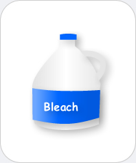

|  |
Bleach
Chemicals you may find: Sodium hypochlorite Hydrogen peroxide Sodium perborate Sodium percarbonate (comprised of hydrogen peroxide and sodium carbonate) |
| House hold bleach is commonly used to brighten white laundry and remove stains. It isalso used for cleaning and disinfecting purposes. Most bleaches contain sodium hypochlorite or sodium percarbonate, which oxidize the chemical responsible for color, the so-called chromophores. Chlorine bleaches (containing) sodium hypochlorite may release toxic gases upon reaction with stains. The environmentally more friendly and equally powerful oxygen bleaches containing hydrogen peroxide or compounds that release hydrogen peroxide such as sodium percarbonate will produce harmless oxygen upon reacting with stains and chromophores. | |